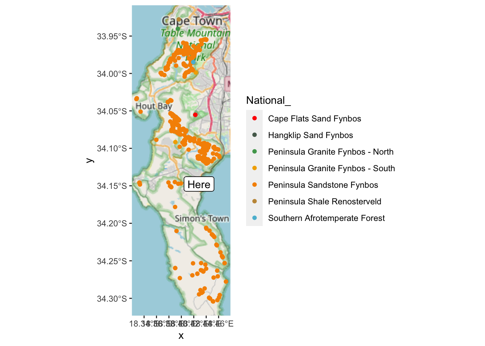
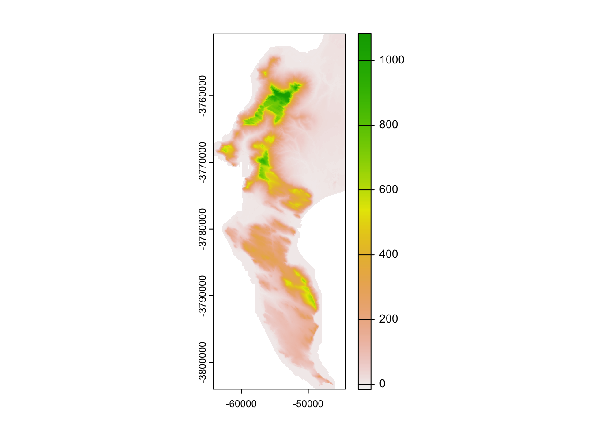
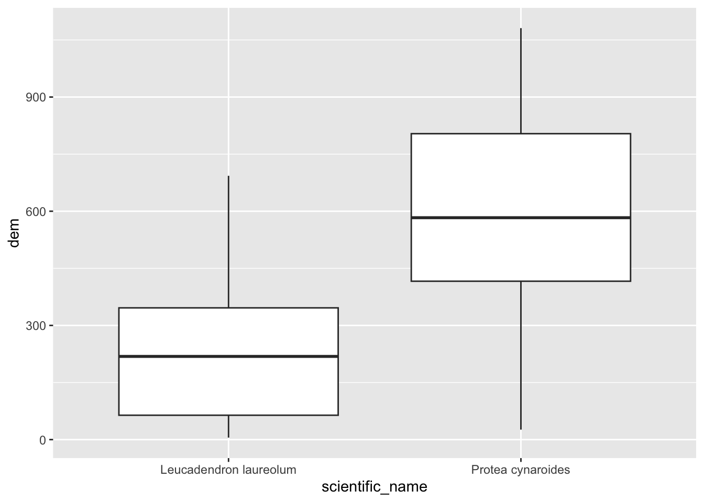

8 Raster GIS operations in R
8.1 Reading in data
Ok, now to look at handling rasters. As with sf, the raster package has one function (raster()) that can read in just about any raster file format. Let’s get started and read in the digital elevation model (DEM) for the City of Cape Town.
dem <- raster("/home/jasper/Documents/Datasets/CoCT/10m_Grid_GeoTiff/10m_BA.tif")
class(dem)## [1] "RasterLayer"
## attr(,"package")
## [1] "raster"dem #Typing the name of a "raster" class data object gives you the details## class : RasterLayer
## dimensions : 9902, 6518, 64541236 (nrow, ncol, ncell)
## resolution : 10, 10 (x, y)
## extent : -64180, 1000, -3804020, -3705000 (xmin, xmax, ymin, ymax)
## crs : +proj=tmerc +lat_0=0 +lon_0=19 +k=1 +x_0=0 +y_0=0 +datum=WGS84 +units=m +no_defs +ellps=WGS84 +towgs84=0,0,0
## source : /home/jasper/Documents/Datasets/CoCT/10m_Grid_GeoTiff/10m_BA.tif
## names : X10m_BA
## values : -32768, 32767 (min, max)From the proj4string we can see that the coordinate reference system is Transverse Mercator Lo19. If you just want to know the CRS from a raster, you just call the proj4string like so:
proj4string(dem)## [1] "+proj=tmerc +lat_0=0 +lon_0=19 +k=1 +x_0=0 +y_0=0 +datum=WGS84 +units=m +no_defs +ellps=WGS84 +towgs84=0,0,0"Similar to st_crs(), you can define a projection using the syntax proj4string(your_raster) <- "your_proj4string". For reprojecting, you use the function projectRaster(). We’ll look at it later.
8.2 Cropping
Ok, before we try to anything with this dataset, let’s think about how big it is… One of the outputs of calling dem was the row reading dimensions : 9902, 6518, 64541236 (nrow, ncol, ncell). Given that we are talking about 10m pixels, this information tells us that the extent of the region is roughly 100km by 65km and that there are ~65 million pixels! No wonder the file is ~130MB. While R can handle this, it will be slow! There are many ways to improve the efficiency of handling big rasters in R (see this post for details if you’re interested), but for the purposes of this tutorial we’re going to take the easy option and just crop it to a smaller extent, like so:
dem <- crop(dem, extent(c(-66642.18, -44412.18, -3809853.29, -3750723.29)))Note that the crop() function requires us to pass it an object of class extent. Just like st_crop() from sf, crop() can derive the extent from another data object. One silly difference, is that if you pass it the coordinates of the extent manually (as above), you first need to pass it to the extent() function, and they need to follow the order xmin, xmax, ymin, ymax (as opposed to xmin, ymin, xmax, ymax as you do for st_crop()). Keep your eye out for these little differences, because they will trip you up…
Ok, so how big is our dataset now?
dem## class : RasterLayer
## dimensions : 5330, 1977, 10537410 (nrow, ncol, ncell)
## resolution : 10, 10 (x, y)
## extent : -64180, -44410, -3804020, -3750720 (xmin, xmax, ymin, ymax)
## crs : +proj=tmerc +lat_0=0 +lon_0=19 +k=1 +x_0=0 +y_0=0 +datum=WGS84 +units=m +no_defs +ellps=WGS84 +towgs84=0,0,0
## source : memory
## names : X10m_BA
## values : -15, 1084 (min, max)…still >10 million pixels…
8.3 Aggregating / Resampling
Do we need 10m data? If your analysis doesn’t need such fine resolution data, you can resample the raster to a larger pixel size, like 30m. The aggregate() function in the raster package does this very efficiently, like so:
dem30 <- aggregate(dem, fact = 3, fun = mean)Here I’ve told it to aggregate by a factor of 3 (i.e. bin 9 neighbouring pixels (3x3) into one) and to assign the bigger pixel the mean of the 9 original pixels. This obviously results in some data loss, but that can be acceptable, depending on the purpose of your analysis. Note that you can pass just about any function to fun =, like min(), max() or even your own function.
dem30## class : RasterLayer
## dimensions : 1777, 659, 1171043 (nrow, ncol, ncell)
## resolution : 30, 30 (x, y)
## extent : -64180, -44410, -3804030, -3750720 (xmin, xmax, ymin, ymax)
## crs : +proj=tmerc +lat_0=0 +lon_0=19 +k=1 +x_0=0 +y_0=0 +datum=WGS84 +units=m +no_defs +ellps=WGS84 +towgs84=0,0,0
## source : memory
## names : X10m_BA
## values : -15, 1083.556 (min, max)Ok, so we’ve reduced the size of the raster by a factor of 9 and only have a little over 1 million pixels to deal with. Much more reasonable! Now let’s have a look at what we’re dealing with.
8.4 Basic plotting
Now that we’ve reduced the size of the dataset, we can try the base plotting function:
plot(dem30)
Or with the Tidyverse…
But ggplot() doesn’t accept rasters, so we need it a dataframe with x and y columns for the coordinates, and a column containing the values to plot. This is easily done, firstly by converting the raster to a vector layer of points, and then by coorcing that into a dataframe, like so:
#convert to points
dem30df <- rasterToPoints(dem30, spatial = TRUE)
class(dem30df) #note that this is a class from library(sp)## [1] "SpatialPointsDataFrame"
## attr(,"package")
## [1] "sp"#coerce to a dataframe
dem30df <- data.frame(dem30df)
names(dem30df)## [1] "X10m_BA" "x" "y"
## [4] "optional"#call tidyverse libraries and plot
library(tidyverse)
dem30df %>%
ggplot() +
geom_raster(aes(x = x, y = y, fill = X10m_BA))
Ok, how different does our 30m raster look to the 10m version?
demdf <- data.frame(rasterToPoints(dem, spatial = TRUE))
names(demdf)## [1] "X10m_BA" "x" "y"
## [4] "optional"demdf %>%
ggplot() +
geom_raster(aes(x = x, y = y, fill = X10m_BA))
Not noticeably different at this scale!
8.5 Disaggregating
dem10 <- disaggregate(dem30, fact = 3, method = "bilinear")One way to explore the degree of data loss is to disaggregate() our 30m DEM back to 10m and then compare it to the original.
Note that I’ve tried to use bilinear interpolation to give it a fair chance of getting nearer the original values.
Now, how can I compare my two 10m rasters?
8.6 Raster maths!
The raster package makes this easy, because you can do maths with rasters, treating tham as variables in an equation. So we can calculate the data loss as the difference between the original and disaggregated DEMS, like so.
diff <- dem - dem10## Warning in dem - dem10: Raster objects
## have different extents. Result for their
## intersection is returnedNote that the error is because we lost some of the 10m cells along the edged when we aggregated…
diffdf <- data.frame(rasterToPoints(diff, spatial = TRUE))
names(diffdf)## [1] "layer" "x" "y"
## [4] "optional"diffdf %>%
ggplot() +
geom_raster(aes(x = x, y = y, fill = layer))
If you look really closely, you’ll see the outline of the cliffs of Table Mountain, where you’d expect the data loss to be worst. The colour ramp tells us that the worst distortion was up to 100m, or about 10% of the elevation range in this dataset, but don’t be fooled by the extremes! Let’s have a look at all the values as a histogram.
diffdf %>%
ggplot() +
geom_histogram(aes(layer))## `stat_bin()` using `bins = 30`. Pick better
## value with `binwidth`.
Looks like most values are within 10 or so metres of their original values, so the data loss really wasn’t that bad!
8.7 Terrain calculations
In addition to raster maths with multiple rasters, you can do all kinds of calculations within a raster using focal(). This essentially applies a moving window, calculating values for a neighbourhood of cells using whatever function you supplied (mean, max, your own, etc) as it goes.
The function terrain() is a special case of focal() optimized for calculating slope, aspect, topographic position index (TPI), topographic roughness index (TRI), roughness, or flow direction.
Here I’ll calculate the slope and aspect so that we can pass them to the function hillShade() to make a pretty hillshade layer.
aspect <- terrain(dem30, "aspect")
slope <- terrain(dem30, "slope")
hillshade <- hillShade(slope, aspect)
plot(hillshade)
Probably prettier with Tidyverse:
hsdf <- data.frame(rasterToPoints(hillshade, spatial = TRUE))
names(hsdf)## [1] "layer" "x" "y"
## [4] "optional"hsdf %>%
ggplot() +
geom_raster(aes(x = x, y = y, fill = layer)) +
scale_fill_gradient(low = "grey10", high = "grey90")
8.8 Raster stacks
A nice thing about rasters is that if you have multiple rasters “on the same grid” (i.e. with the same pixel size, extent and CRS) then you can stack them and work with them as a single rasterstack object.
dstack <- stack(dem30, slope, aspect, hillshade)
dstack## class : RasterStack
## dimensions : 1777, 659, 1171043, 4 (nrow, ncol, ncell, nlayers)
## resolution : 30, 30 (x, y)
## extent : -64180, -44410, -3804030, -3750720 (xmin, xmax, ymin, ymax)
## crs : +proj=tmerc +lat_0=0 +lon_0=19 +k=1 +x_0=0 +y_0=0 +datum=WGS84 +units=m +no_defs +ellps=WGS84 +towgs84=0,0,0
## names : X10m_BA, slope, aspect, layer
## min values : -15.0000000, 0.0000000, 0.0000000, -0.4906481
## max values : 1083.5555556, 1.3708258, 6.2831853, 0.9999974As you can see the “dimensions” now report 4 layers, and there are 4 names. Some of these don’t look all that informative though, so let’s rename them.
names(dstack) <- c("elevation", "slope", "aspect", "shade")8.9 Extracting raster to vector
Ok, enough fooling around. More often than not, we just want to extract data from rasters for further analyses (e.g. climate layers, etc), so let’s cover that base here.
Extract to points
First, let’s get some points for two species in the Proteaceae, Protea cynaroides and Leucospermum conocarpodendron…
library(rinat)
#Call data for two species directly from iNat
pc <- get_inat_obs(taxon_name = "Protea cynaroides",
bounds = c(-35, 18, -33.5, 18.5),
maxresults = 1000)
ll <- get_inat_obs(taxon_name = "Leucadendron laureolum",
bounds = c(-35, 18, -33.5, 18.5),
maxresults = 1000)
#Combine the records into one dataframe
pc <- rbind(pc,ll)
#Filter returned observations by a range of attribute criteria
pc <- pc %>% filter(positional_accuracy<46 &
latitude<0 &
!is.na(latitude) &
captive_cultivated == "false" &
quality_grade == "research")
#Make the dataframe a spatial object of class = "sf"
pc <- st_as_sf(pc, coords = c("longitude", "latitude"), crs = 4326)Now let’s extract the data to the points.
dat <- extract(dem30, pc)## Warning in .local(x, y, ...): Transforming
## SpatialPoints to the CRS of the RasterNote how raster conveniently handled my oversight about making sure the CRS are the same for both layers!
head(dat)## [1] 704.5556 462.0000 516.4444 454.3333
## [5] 456.7778 701.0000Hmm… ok… It just returned the vector of numbers… not all that handy on it’s own. Let’s add it to out points layer and plot.
pc$dem30 <- dat
pc %>% ggplot() +
geom_boxplot(aes(scientific_name, dem30))
(Hmm… do you think those Leucadendron laureolum outliers could actually be Leucadendron strobilinum?)
Nice! But what if we have data lots of rasters?
#extract from stack
dat <- extract(dstack, pc) ## Warning in .local(x, y, ...): Transforming
## SpatialPoints to the CRS of the Raster#bind columns to points
edat <- cbind(as.data.frame(pc), dat)
#select columns we want and tidy data into long format
edat <- edat %>%
as_tibble() %>%
dplyr::select(scientific_name, elevation, slope, aspect, shade) %>%
pivot_longer(c(elevation, slope, aspect, shade))
#panel boxplot of the variables extracted
edat %>% ggplot() +
geom_boxplot(aes(scientific_name, value)) +
facet_wrap(~name, scales = "free") 
Something I should have mentioned is that if you would like each point to sample a larger region you can add a buffer = argument to the extract() function, and a function (fun =) to summarize the neighbourhood of pixels sampled, like so:
pc$dem30 <- extract(dem30, pc, buffer = 200, fun = mean)## Warning in .local(x, y, ...): Transforming
## SpatialPoints to the CRS of the Rasterpc %>% ggplot() +
geom_boxplot(aes(scientific_name, dem30))Extract to polygons
- binning
8.10 Rasterizing
We could even add contours…
ggplot() +
geom_raster(data = hsdf, aes(x = x, y = y, fill = layer, alpha = 0.5)) +
scale_fill_gradient(low = "grey10", high = "grey90") +
geom_contour(data = dem30df, aes(x = x, y = y, z = X10m_BA), breaks = seq(0, 1100, 100), colour = "black") +
theme(legend.position = "none")